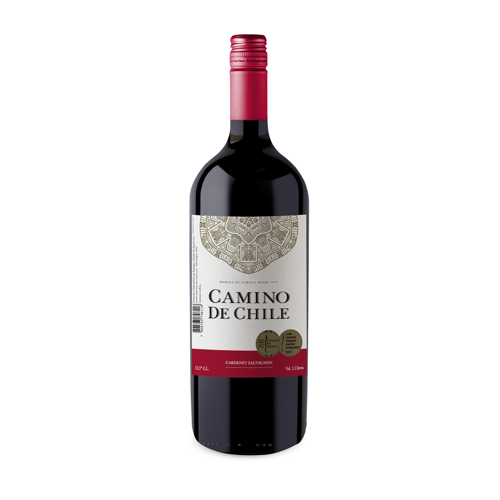
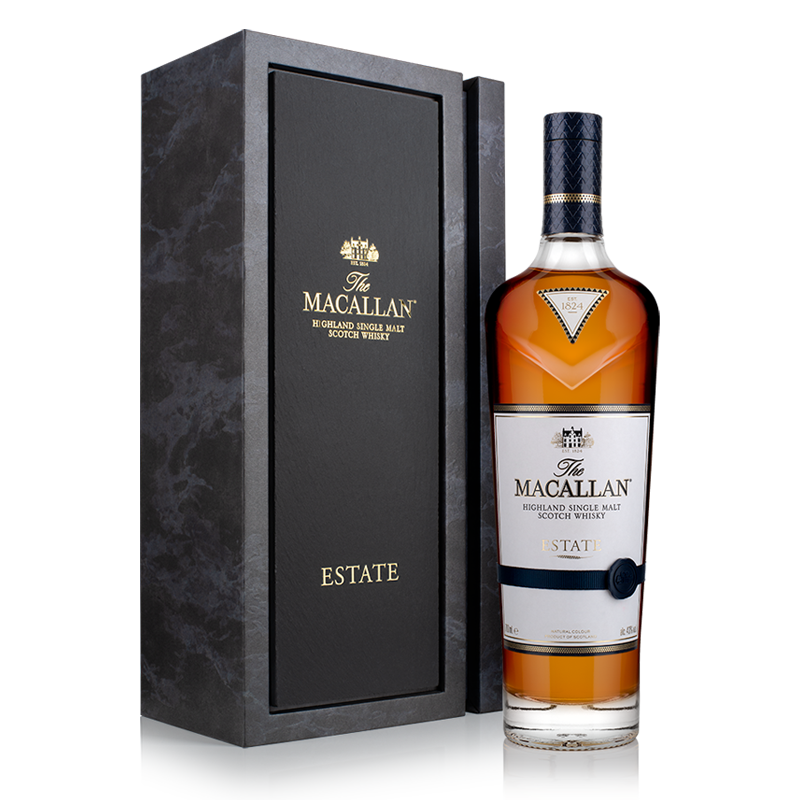
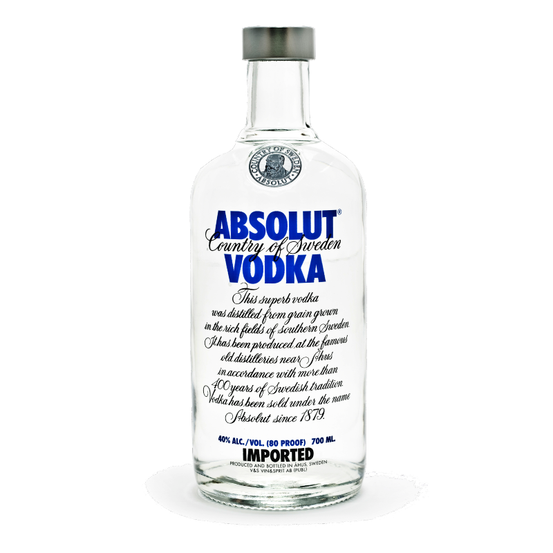
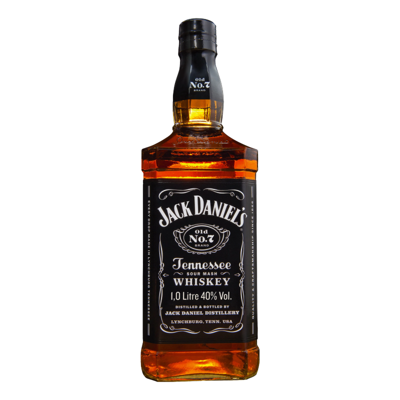
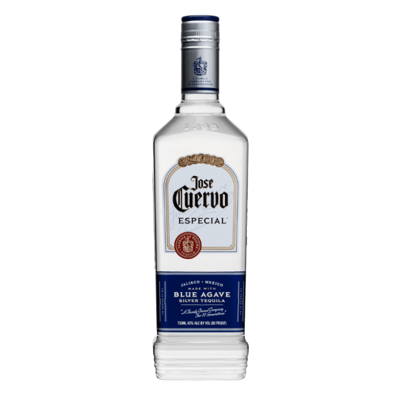

Cabernet
Precio: $77.900
Cantidad:
La Cabernet Sauvignon es una uva de un color muy oscuro y opaco, con tonos azulados y púrpuras, lo que hace que produzca vinos de un color rubí intenso.
Macallan
Precio: $250.990
Cantidad:
Frutas maceradas (piense en pasas, sultanas, naranjas y algunas manzanas guisadas empapadas en alcohol) y muchas especias festivas para hornear, como canela, jengibre, clavo y nuez moscada. Un cuerpo sorprendentemente ligero trae consigo ricos sabores. El chocolate amargo y la naranja se unen a esas frutas alcohólicas en la nariz.
Vodka Escocés
Precio: $99.990
Cantidad:
Encontrar palabras para describir el sabor de un vodka tan avanzado puede ser un esfuerzo para la paciencia y la imaginación de los escritores con más talento. Describir la suavidad de Vodka VALT es fácil por la única razón de que es única. De sabor a dulce helado de vainilla con un final cálido, mantequilla batida.
Whisky
Precio: $25.000
Cantidad:
Un rico dulzor seca la fruta con nubes de humo y fuertes sabores a malta de cebada, cálidos e intensos. En el fondo de la boca hay una explosión de pimienta. Final: enorme, largo, final cálido y especiado con una dulzura tentadora.
Tequila Jose Cuervo
Precio: $17.000
Cantidad:
De color pajizo claro y tiene una esencia herbácea de agave. Su sabor es de agave cocido y frutas tropicales guisadas respaldadas por notas persistentes de vainilla, clavo, canela y caramelo. Tequila de producción familiar en lotes pequeños. Celebra una tradición familiar iniciada hace más de 200 años.
Bluelabel
Precio: $293.000

Cantidad:
Sabor a avellanas, miel, jerez y naranjas, para después liberar aromas de jengibre, quinoto, sándalo y chocolate negro. Es un Whisky extremadamente rico y ahumado.